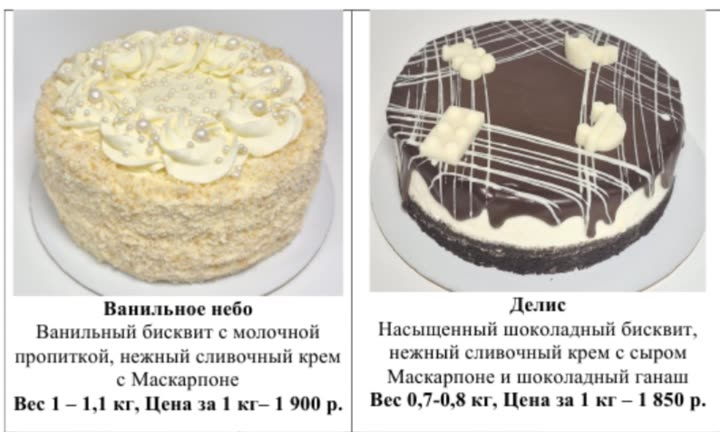
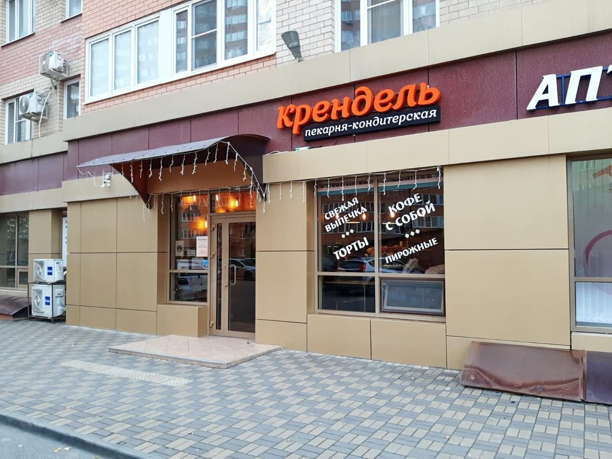

| 2ГИС | Яндекс Карты | |
|---|---|---|
| Рейтинг | 4,4 · 114 оценок | 4,9 · 330 оценок |
| Отзывы | 102 | 142 |
| Карточка подтверждена | Плашка «Компания давно не обновляла данные» | Нет, «Вы владелец этой организации?» |
| Ответы на отзывы | 5 из 48 последних, последний в ноябре 2025 | Нельзя, карточка не ваша |
| Часы работы | Ежедневно 9:00–21:00 | До 21:00 |
| Меню и цены | Есть, обновлено 23 мая 2026 | Есть, но цены другие |
| Сайт | Нет | Нет |
Что нашёл
Что тянет рейтинг в 2ГИС вниз важно
Из 48 последних отзывов 33 на пятёрку, четвёрок нет совсем, и 15 на 1–3 звезды. Разложил эти 15 по причинам:
Жалобы на продавца в основном 2024 и начала 2025 года. Все четыре жалобы 2026 года уже про продукт: начинка в круассане (март), десерт «Облако» с плесенью (апрель), сухие завитушки (май), сырое тесто в розочке (июль). Это не повод для паники, но видно, куда смотреть.
На жалобы 2026 года никто не ответил важно
Ответов всего 5 из 48 отзывов, последний в ноябре 2025. Отзыв про плесень в десерте висит без ответа с апреля, его читает каждый, кто открывает отзывы. На 33 благодарности тоже нет ни одного «спасибо». Когда жалоба без ответа, человек читает это как «им всё равно». Спокойный ответ с извинением и тем, что исправили, работает лучше любой рекламы, а бывает, что автор после ответа сам меняет оценку.
Сколько нужно, чтобы вернуть 4,5 и выше важно
Сейчас в 2ГИС 114 оценок со средним 4,4. Если считать по простой средней, чтобы выйти на 4,5, нужно примерно 23 новых пятёрки, на 4,6 около 60. Довольных покупателей у вас много: в Яндексе 330 оценок и 4,9. Они просто не доходят до 2ГИС, их никто не просит.
2ГИС пишет «Компания давно не обновляла данные», хотя вы обновляете заметно
Меню в 2ГИС обновлено 23 мая 2026, фото от владельца загружены в январе, мае и июне 2026. То есть доступ к кабинету у вас есть. Но данные не подтверждены, и каждый, кто открывает карточку, видит эту плашку. В разделе «Актуальность данных» тоже стоит «не подтверждена».
На вашей карточке рекламируют торты конкурентов заметно
В блоке «Похожие организации» прямо под вашими часами работы три рекламных блока: «Хлебные истории» с доставкой, «Caramel desserts: торты на заказ к любому празднику» и «Белореченские торты: более 30 видов тортов в наличии и на заказ». То есть человеку, который пришёл к вам за тортом, предлагают заказать его у других.
Карточка в Яндекс Картах никому не принадлежит заметно
Там у вас 4,9 и 330 оценок, лучше, чем у многих соседей. Но висит «Вы владелец этой организации?», и вы не можете ни отвечать на отзывы, ни менять меню. В разборе отзывов от Яндекса тема «Торты» самая слабая: 77% положительных из 23 отзывов, против 95% у хлеба. В «Похожих местах» рядом показывают «Ваниль» со значком «Хорошее место 2026».
Цены в двух картах разные, и в меню есть ошибки заметно
Человек открывает 2ГИС и Яндекс и видит разные цены на одно и то же:
| Позиция | 2ГИС, май 2026 | Яндекс, октябрь |
|---|---|---|
| Синабон | 125 ₽ | 195 ₽ |
| Круассан (в 2ГИС «в ассортименте») | 150 ₽ | 240 ₽ |
| Корзинка сырная | 260 ₽ | 400 ₽ |
| Батон или хлеб французский | 77 ₽ | 120 ₽ |
Откуда цены в Яндексе, по карточке не понять, возможно из доставки. В меню 2ГИС: «Чиабатта 28 ₽» (похоже на опечатку), «Круасанны», «французкий». Цены тортов в меню за 100 г, а на ваших фото-карточках тортов за килограмм, и у «Кренделя» они не сходятся: 175 ₽ за 100 г против 1 840 ₽ за кг. Одна покупательница уже написала злой отзыв про цену круассана.

На вопросы покупателей отвечает ИИ, а не вы просто
В «Вопросах о месте» в 2ГИС висят вопросы, на которые отвечает ИИ-помощник 2ГИС:
Рубрик мало, снаружи почти нет фото просто
На витрине написано «Свежая выпечка, кофе с собой, торты, пирожные». В 2ГИС только две рубрики: «Пекарни» и «Кондитерские изделия». Яндекс считает вас ещё и кофейней. Из 50 фото в 2ГИС снаружи только 4, ваши последние фото фасада от декабря 2022, а одно из «уличных» вообще показывает просто жилой дом.

Что предлагаю
Беру на себя всё из списка: от вас нужно только подтвердить карточки по коду из СМС и одобрить ответы.
- Подтвердить карточки в 2ГИС и Яндексе, выставить одни часы, рубрики и одно меню с ценами
- Ответить на все отзывы, начиная с жалоб, и дальше отвечать на новые
- QR-код «Оцените нас» на кассу и на коробку торта, чтобы поднять 2ГИС до 4,5 и выше
- Поставить хорошие фото: вход, зал, витрина, торты
- Сайт пекарни со ссылкой из обеих карточек: вот концепт
- Раз в месяц отчёт: рейтинг, новые отзывы, сколько людей посмотрели карточку, позвонили и построили маршрут
Разбор бесплатный. Стоимость работ обсудим, она небольшая.